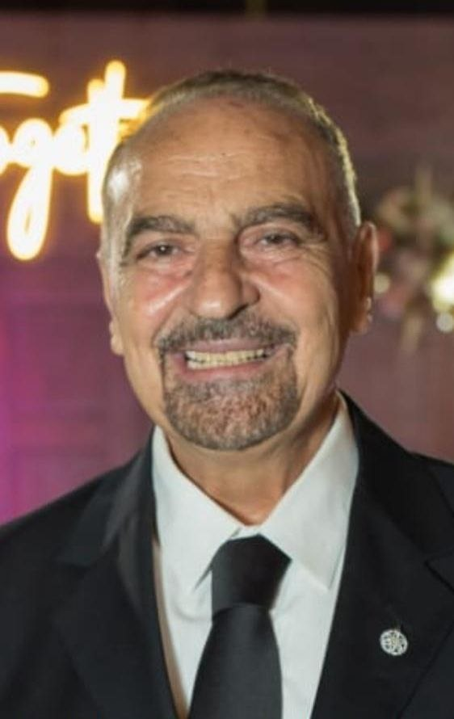
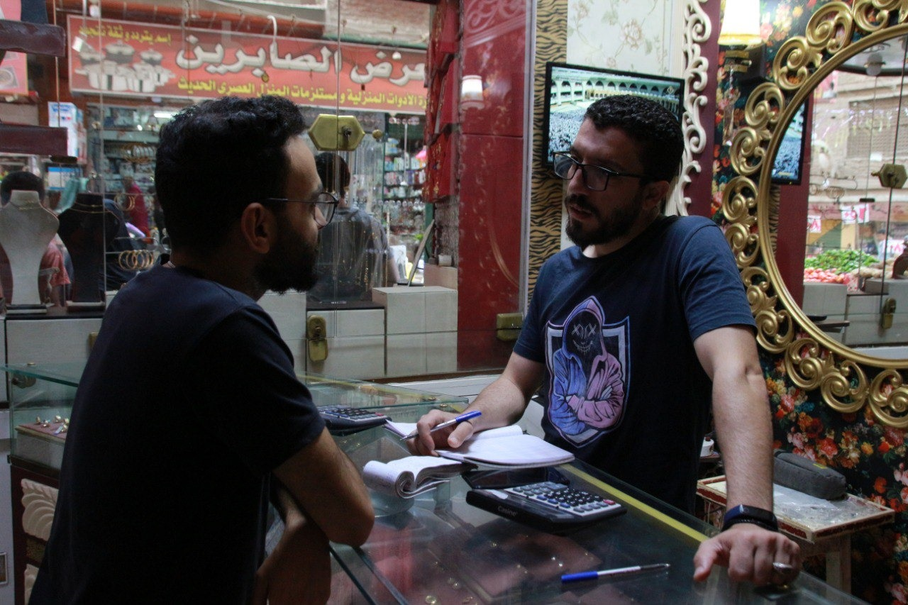
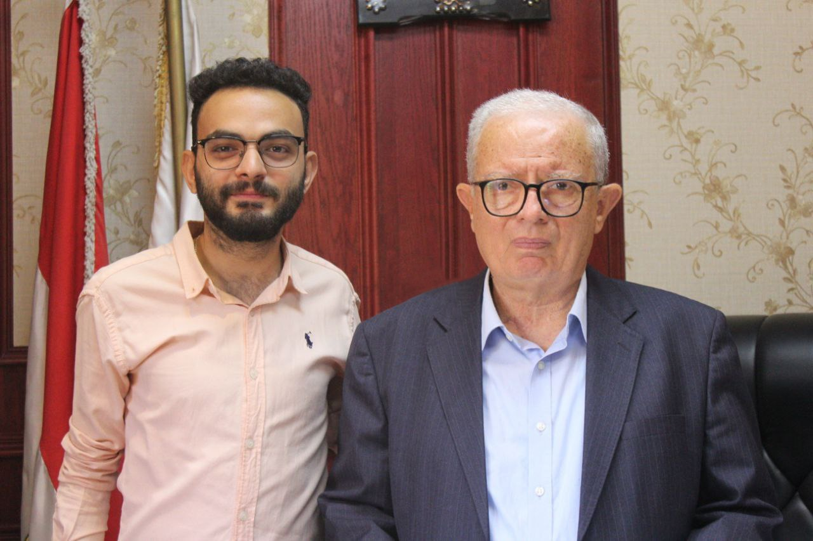

الذهب.. طريق المصريين للاستثمار بلا مخاطر

- صرح الاستاذ الدكتور صفوت جبر دكتور الجيلوجية في الهيئة القومية للأستشعار عن بعد وعلوم الفضاء ورئيس فسم الصخور والمعادن أن مناجم الذهب لها تاريخ كبير في مصر بداية من المناجم الفرعونية مثل منجم الفاوي ومنجم وادي العلاقي أو منجم الفواخير ومنجم السكري حتي أكتشاف المناجم الحديثة مثل منجم حمش ومنجم أبو مروات الذي تم الإعلان عن اكتشافه في يناير 2024 من قبل وزارة البترول والثروة المعدنية ويُقدر احتياطي المنجم بنحو 290 ألف طن من الذهب.
- كما اشاد بعملية أستخراج الذهب في العصور القديمة التي كانت تعتمد علي التنقيب حول المناطق المركزة بالذهب في صحراء مصر حيث أن متوقع أن الذهب في هذا الوقت كان علي مرئ العين وكان يوجد ممرات للتنقيب علي الذهب.
- ذكر الدكتور أيضا طرق الكشف عن الذهب أستخدام الوسائل الحديثة والاقمار الصناعية والتي تعتمد بشكل أساسي علي الكشف عن المناطق الذي يتركز فيها المحليل الحارة او السوائل الحارة التي تتركز في مناطق محددة ومع ظروف خاصة يطلق عليها مناطق (تحول) ومع الوقت بتجف تلك المحليل تكون عروق الذهب المعروفة وهنا ياتي دور الاقمار الصناعية في البحث والكشف عن تلك العروق في المناطق المختلفة المركزة وتكون هنا نسبة أكتشاف الذهب عاليا وشدد الدكتور عن نسبية نتيجة تلك العملية أي يعني من المحتمل عدم تواجد الذهب حتي بعد عمل عملية البحث والكشف بأستخدام الاقمار الصناعية.
- شرح الدكتور طرق أستخراج الذهب المختلفة الان من أشهر طرق الاستخراج هي أستخراج الذهب من الصخور البركانية أو صخور (القاعدة) في والتي تعتمد علي كسر وطحن تلك الصخور من أجل أستخراج الذهب أو أستخراج الذهب من الاودية والانهار عن طريق تصفية طربة النهر من الطين وأستخراج الذهب منها الذي هو بنفسة يطلق علية ذهب منقول عن طريق العوامل الطبيعية المختلفة مثل الامطار والرياح والعواصف وغيرها من الظروف الطبيعية.
- اختتم الدكتور كلامة بعملية نقل الذهب من المنجم حتي يصل التجار في السوق وصولا الي يد المستهتلك والتي تمر تلك العملية بأكثر من مرحلة بداية من خروجه من النجم علي شكل سبيكة ثم ينتقل الي جهات الدمغة ثم تخزنها وعمل حصر لكمية الذهب المستخرجة وصولا الي الشركات مثل شركة سنتامين وشركة المجموعة العربية للذهب والتعدين التي تحدد سعره ثم بيعة للسوق والتجار الذي يبيعه للمستهلك العادي.
- وهذا يطرح سوال مهم جدا رغم تاريخ مصر العريق في مجال التنقيب وأستخراج الذهب والذي يقدر إجمالي إنتاج الذهب في مصر سنويًا نحو 15.8 طن وفقا لوزارة البترول والثروة المعدنية المصرية الا أن مصر تواجه الان واحدة من أكبر الازمات الاقصادية التي أثرت علي جميع القطاعات ومنها الذهب الذي أرتفعت أسعاره بشكل كبير ولكن ما هي العوامل التي توثر علي أسعار الذهب في مصر وما هي المبادرات التي تتبعها الدولة لان لحل ارتفاع سعر الذهب في مصر.
- كل هذا سيجاوب علية الدكتور حسين عيسي رئيس جامعة عين شمس السابق ورئيس لجنه الخطه والموازنه بمجلس النواب السابق الذي أكد أن من اكبر العوامل المؤثرة في أسعار الذهب عملية العرض والطلب وخاصتا الطلب حيث أنه صرح أن الذهب هي سلعة موسمية ترتفع حسب المواسم المختلفة مثل الزواج وأعيد الام.
- كما أن الذهب من مميزاته أنه يحافظ علي قيمته الشرائية حتي مع الوقت من ما يجعله ملاذ امن للالستثمار والحفاظ علي قيمة الاموال لفترات زمنية طويلة وهذا أثر علي الانتاج المحلي من ما جعل الدولة اللجوء الي استيراد الذهب لتغطية أحتياجها من الذهب ومع نفاذ الوفرة الدولارية وأرتفاع سعر الدولار ظهرت الازمة وارتفع سعر الذهب بشكل كبير و هذا يعتبر أيضا من أهم العوامل التي أثرت علي سعر الذهب في السوق.
- مضيفا أن هناك أكثر من 9 مليون لاجئ من ما يجعلهم منافسين للمصرين في شراء الذهب والتأثير علي العرض والطلب أو سعر الذهب بشكل عام.
- أعرب عيسي عن أستيائه من عادات المصريين بالادخار والاستثمار في الذهب فقط ونصح بالاستثمار أو الادخار في المشروعات الزراعية,الصناعة,المشروعات الصغيرة أو المتوسطة أو حتي الاستثمار في العقارات او شراء ودايع والسندات البنوك من ما يقلل الضغط علي الطلب علي الذهب في نفس الوقت تزيد أنتاجية ودخل الدولة للفرض. كما شدد علي فرض عقوبات صارمة على مهربي الذهب والمتاجرين غير المرخصين وتشديد الرقابة على المنافذ الحدودية لمنع تهريب الذهب من وإلى البلاد.
- وأضاف الدكتور مختتما كلامة علي جهود وسياسات الدولة لحل مشكلة أرتفاع الذهب ومن أهم تلك الحراءات هي سماح المصريين القادمين من الخارج بأدخال الذهب الي البلاد من ما يزيد من ما يقلل من عملية العرض والطلب كما زادت من الضرائب والرسوم المفروضة علي شركات أستخراج الذهب وشركات الكبيرة العاملة في مجال شراء الذهب من الحكومة وتوفيره في السوق والتجار وأكد ان كل ما أرتفعت كمية الذهب المستخرجة كل ما زادت حصة الدولة من تلك العملية من ما يساعد علي حل المشكلة بشكل نسبي أو الي حد ما.
- لكن هل الاستثمار في الذهب لة فؤائد اذا استثمر فيه بالشكل الصحيح وهل توجد علامات توضح اذا كان الذهب سيرتفع سعره أم سينخفض وهل الاستثمار في الذهب له مخاطر سيجاوب علي كل هذه الاسئلة وأكثر الدكتور وخبير الذهب الاستاذ أمير رزق الذي أكد ان الاستثمار في الذهب لة أسس لنجاح عملية الاستثمار.
- قد أشار أمير ان معظم الناس يستثمرون في الذهب بشكل خاطئ حيث يبيع كمية الذهب الذي أستثمار فيها بعد شهر واحد وهذا من أكبر الاحطاء الشائعة عند الاستثمار في الذهب لكن لضمان نجاح الاستثمار يجب أن ينتظر المستثمر ما لا يقل عن 10 اشهر لضمان مكسب ملحوظ مع شراء أكثر من سبيكة لتجنب تذبذب أسعار الذهب في السوق وضمان أعلي نسبة ربح.
- لفت الدكتور انتباه الي شراء الذهب علي شكل أنصة وليس علي شكل مشغولات بسبب أنخفاض مصنعية الانصة من يوفر من ميزانية الاستثمار وشدد أيضا عدم شراء الذهب القديم او "الكسر" بسبب كثرة الغش في هذا النوع المشغولات تأكد من شراء الانصة من مكان معروف ومضمون مثل (بي تي يس) وغيرها من الشركات المعروفة في المجال غير وجود ميرة الكاش باك تصل الي 22 جنيه في الجرام.
- أكد أمير ان من المنتوقع أرتفاع أسعر الذهب عالميا حتي تصل الي 3000 دولار للانصة الواحدة في غضون 6 أشهر فقط من ما يعادل 4000 جنية لجارام الذهب الواحد عيار 21 من جعله يصرح لكل من يرغم في الاستثمار في الذهب الان قائلا "أشتري الذهب دلوقتي الانه هيزيد" حيث أنه أكد علي ان أشهر البنوك العالمية في شراء والاستثمار الذهب مثل بنك (جاي بي مورجن) و(جولدن ساكس) الذي توقع وصول سعر الذهب الي 4000 دولار في اواخر سنة 2024 وبداية 2025 أشار أمير أيضا الي تحركات وميادرات الدول مثل روسيا والصين الذي أعلنت شراء كمية من الذهب تقدر ب170 طن في سنة 2024 كمؤشر علي أرتفاع أسعر الذهب عالميا.
- نفي الدكتور أي مخاطر للذهب اذا كان المستثمر ينتظر الوقت الصحيح للاستثمار وعدم السعي وراء المكسب السريع حيث أنه اكد علي مرور السنين الماضية كان سعر الذهب في أرتفاع دائما من سنة 2020 وصل سعر الجرام الي 800 جنية حتي سنة 2023 الذي وصل فيها جرام الذهب الي 3000 جنية من ما يجعل مخاطر الاستثمار في الذهب شبة معدومة بسبب أستمرارية أرتفاع سعره ودرته علي الحفاظ القيمة الشرائية له من ما يجهلة الان أستثمار بلا مخاطر تقريبا.
- أختتم الدكتور كلامه علي تأثير البرصة العالمية علي أسعر الذهب الذي أكد علي وجود علاقة عكسية بين سعر الفائدة في البنك الفدرالي الامريكي وسعر الذهب عالميا حيث أن اذا ارتفعت سعر الفائدة في البنك الامريكي أنخفاض سعر الذهب بسبب تجمع المستثمرين علي الاستثمار في البنك الامريكي والاستفادة من أرتفاع الفائدة والعكس صحيح اذا أنخفضت الفائدة أرتفعت أسعار الذهب عالميا بسبب شراء المستثمرن للذهب للحفاظ علي أموالهم من أنخفاض قيمة العملة من ما يجعل البرصة من أهم عوامل تأثير علي سعر الذهب عالميا.
- لكن السوال المهم ما هو حال السوق المحلي ومع تذبذب أسعر الذهب وتحرير سعر الصرف ما هو حال التجار المحليين الصغار وهل أثرعليهم تلك التغيرات وكيف يتعامل التجار مع هذا التذبذب في الاسعار وهل تختلف عمولة الذهب بين تاجر واخر سيجاوب علي تلك الاسئلة الاستاذ محمود نادي أحد التجار الصغار في سوق الصاغة أحد اكبر الاسواق في تجارة الذهب في مصر.
- الذي اكد علي ان حال السوق الان مستقر يصل الي الركود بسبب تثبيت سعر الصرف وان من الصعب التاثر من تلك الذبذبات الان تاجر الذهب يكون راس مالة من الذهب فهو يشتري ويبيع ذهب من ما يامنه ضد اي تقلبات في الاسعار مع وجود هامش ربح من المصنعية.
- كما صرح ان حركة السوق تزيد مع وجود تقلبات لكن في المضربات اي شراء سبايك الذهب من المستثمرين للحفاظ علي أموالهم وأكد علي ان حال السوق كان أفضل قبل تثبيت سعر الصرف لكن الوقت الصحيح لشراء الذهب هو الان بعد تثبيت سعر الصرف.
- شرح محمود ايضا ان عمولة الذهب الذي هو يعتبر هو مصدر الربح الوحيد لاي تاجر ذهب تختلف بين تاجر واخر وتقوم علي عدة عوامل من أهمها كمية الذهب حيث انه يحصل المشتريون أو البائعون على خصم على العمولة عند شراء أو بيع كميات كبيرة من الذهب وموقع التاجر يؤثر في مصنعية التاجر حيث ان التجار في المناطق الراقية عادة ما تكون عمولة التجار في المناطق الراقية أعلى من عمولة التجار في المناطق الأقلّ تكلفة والعكس صحيح من ما يجعل عمولة الذهب تختلف تماما بين تاجر واخر.
- اوضح محمود أنواع الذهب في مصر التي تتركز في ثلاث أنواع ذهب عيار 24 الذي يتركز في صناعة السبايك فقط لصعوبة تشكلها وعيار 21 (البلدي) وعيار 18 (اللفرانجي) وهذة الانواع التي تتركز فيها صناعة المشغولات العادية.
- شدد محمود مختتما كلامع علي أهمية الدمغة وأنها الامان لكل تاجر والعلامة التي توضح ان هذا الذهب مصرح بة ومدعوم من الدولة وان هنالك من التجار من يتلاعب بالدمغة ويزور دمغة السبيكة وعلي الدولة فرض عقوبات صارمة لكل من يحاول التلاعب بالدمغة او السوق بشكل عام.
التعليقات
من الفنانين المحترمين جدا
اكتب تعليق